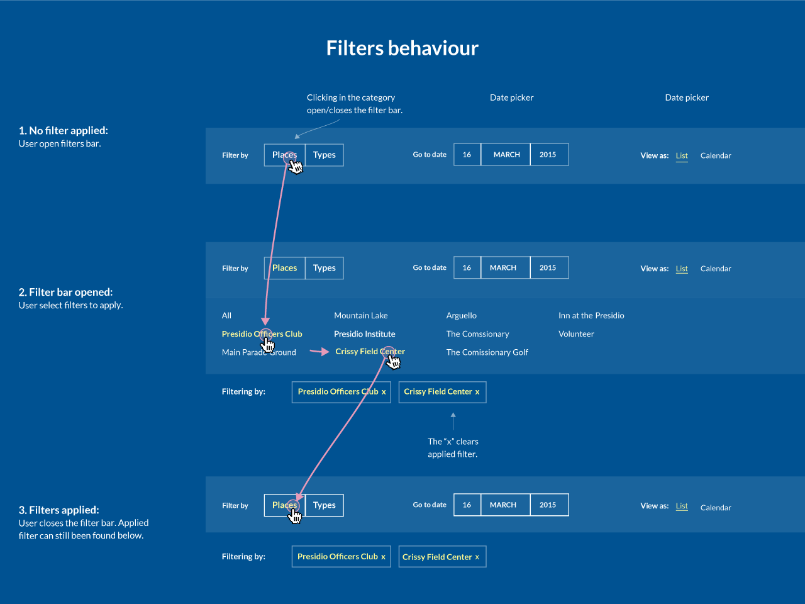
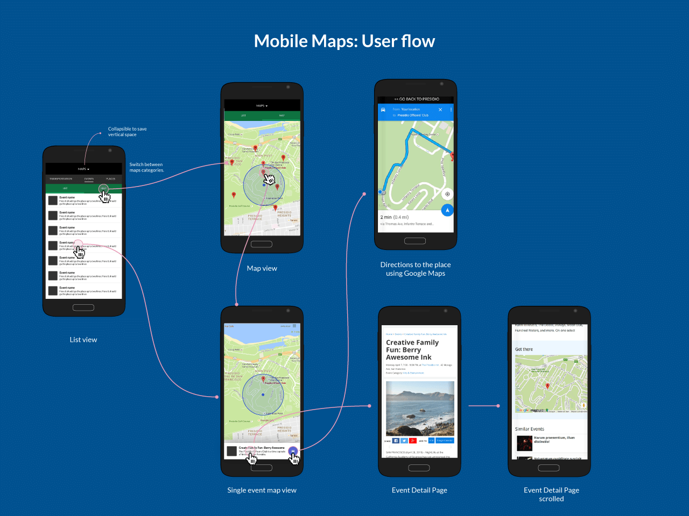

The Presidio of San Francisco is a national park in San Francisco, California.
They were looking to completely redesign their website.


Client
Presidio National Park
Project type
Digital Content
Work done
UX/UI Design
Industry
National Park
Job description
Redefine the digital strategy:
As a large organization with many actors, it was difficult to understand who they were talking about, who was their main public.
Create a brand new desktop and mobile experience.
Polish the story to tell:
Help the client discover which are the most valuable assets they can offer.
Redesign the Map Section
Upgrade the content of the page:
Reduce the excessive amount of text, bring forward the most beautiful imagery which the park count with.
Improve the information quality:
Our analytics study showed that about 75% of the public visited Presidio.gov to learn about how to get and how to move inside the park. So we redesigned Transportation section not only to give information easier to understand, but also as a starter point for the rest of the sections.